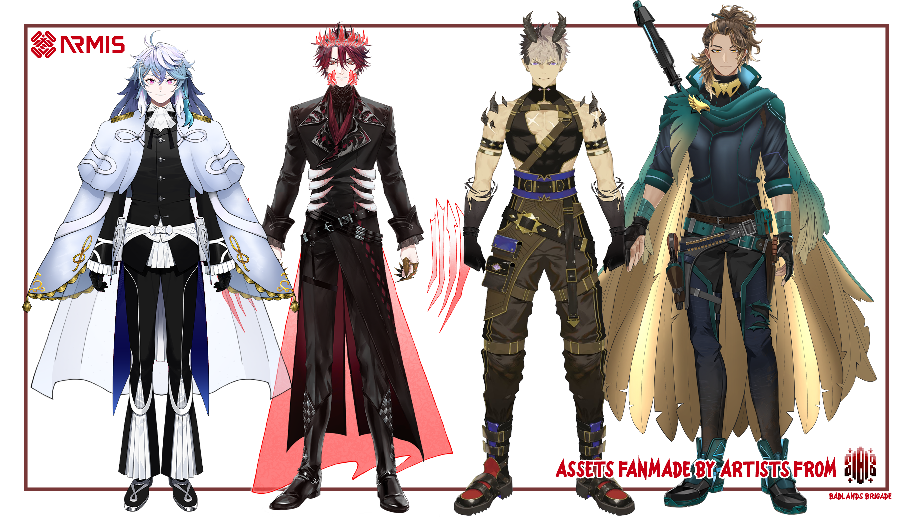

Legends of the Bloodhounds
ARMIS Anniversary 2024
A harrowing tale of the rise of the four-armed monster King Armada and the spread of corruption across the lands. Four intrepid bounty hunters are all that stand between South Elysium and utter annihilation by the scourge of Records Corruption.
Rumours have surfaced that ancient Legendary Artifacts capable of destroying corruption beasts were discovered in the Rugged Mountains, then lost again to corruption beast attacks. Can ARMIS recover the artifacts, defeat King Armada, and knock out some bounties along the way?
Legends of the Bloodhounds: ARMIS Anniversary 2024 is a multi-part project incorporating the following aspects. Make sure to check out the credits for details about our team members and where to find them!
Prelude: Forgotten Threats, Ancient Hopes
In collaboration with South Elysium Times
Reports have surfaced from across South Elysium of strange attacks in the night. A mysterious and reclusive King has taken up residence in the Rugged Mountains near Armadasburg. Ancient artifacts connected to the legendary Bloodhounds of old are uncovered by a team of scholars, yet lost again when they are attacked by corruption beasts.
Revealed through a series of news headlines and audio logs publicised in collaboration with South Elysium Times on X, Forgotten Threats, Ancient Hopes tells the tale of the events leading up to the narrative of our music video Bloodhounds: Hunter's Rise.
Bloodhounds: Hunters’ Rise
Bloodhounds: Hunters’ Rise is a fan cover and music video of ARMIS’ debut song Bloodhounds. Follow the ARMIS boys’ journey through the Badlands and into the Rugged Mountains, hot on the trail of destructive corruption beasts, legendary artifacts that may aid their fight, and of course, plenty of treasure. Watch Bloodhounds: Hunters' Rise at the top of this page, or check it out over on YouTube!
The Badlands Brigade team produced Bloodhounds: Hunters’ Rise as our main celebration of ARMIS’ one year anniversary in November 2024. This cover represents a year’s worth of work by our team of nearly 90 members. We hope you enjoy!
Armaments of the Bloodhounds

The legendary artifacts of the vaunted Bloodhounds of old, newly recovered by the ARMIS boys! Armaments of the Bloodhounds is a package of on-stream outfit assets featuring the Bloodhounds’ Legendary Equipment designs from Bloodhounds: Hunter’s Rise. Includes bonus fugi sets by our artists!
You can find the downloadable Armaments of the Bloodhounds asset and fugi pack here!
Please note, these assets are for ARMIS's exclusive use!
Special Transmission: Celebration and Gratitude
Thank You Letters from the Leadership of the Badlands Brigade
All of us on the Badlands Brigade management team are so grateful for ARMIS and the Armada's inspiration, appreciation, and dedication. We chose to prepare some special letters from each of the managers and team leads to express ourselves to the community!
You can read our letters here!